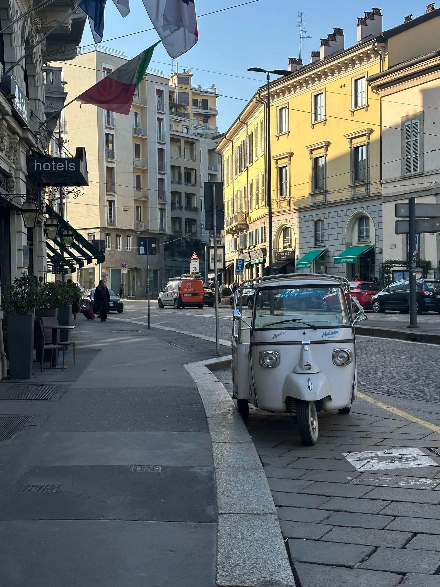
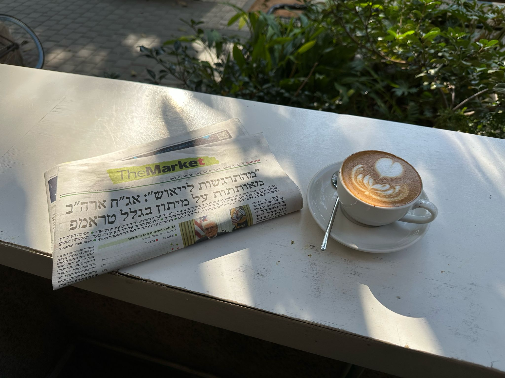
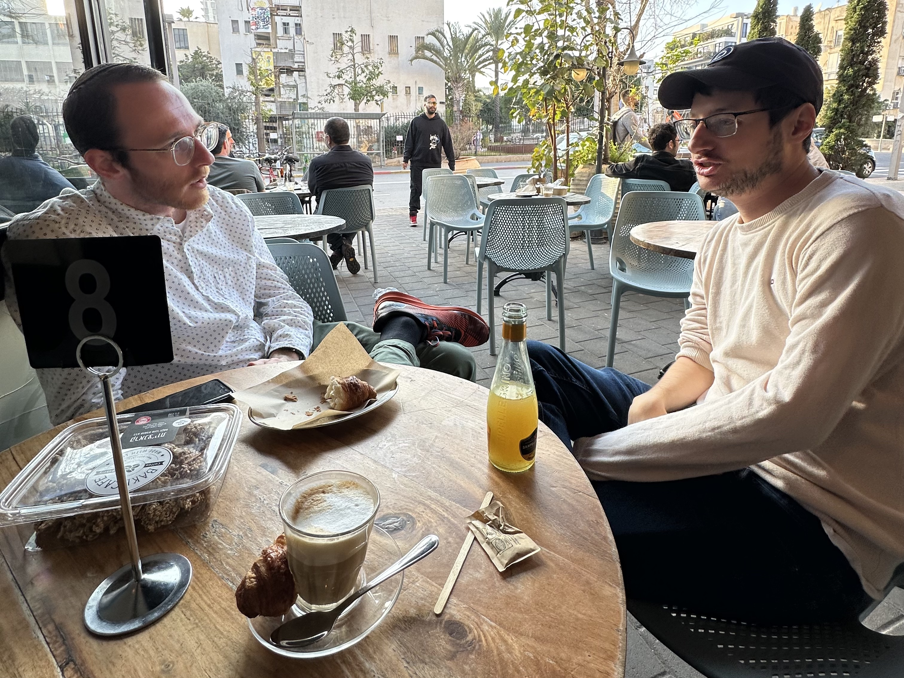

Moving on from Milan
Notes from Milan, en route to Israel — on language, espresso, and why I skipped the Barcelona leg of the trip.
I've left Milan early to Israel; the thought of continuing on to Barcelona felt a burden too heavy to bear in haste, as I feel anxious to move forward with my agenda. Partly owing is the disquiet in the Italian language, with its sharp sounds and distinctive cadence, which feels altogether too foreign to me, and isolating, a contrast to the sounds I remember not only of Spanish but even of Catalan, which today feels more at home than the decisive pronunciation of Milanese.
If Spaniards had any stubbornness, the Italians take their place in their loyalty to their customs. The Vespa culture of Italy is alive and well in Milan, with life described in American media true to scene. Architectural facades dominate the cityscape and as John Crow writes: "Everywhere there is beauty in the wide shining of this land. And what nature did not provide has been added by man."
As per the habits of people, on the one end, the most modest and graffitied metro stops are adorned with Italian espresso machines that would only decorate the most delightful cafes of Los Angeles, and on the other, towards the city center, one can purchase a caffe at twice the price, served by an impatient man in a three-piece suit, interpreting the order exchanged only between the internationally recognized coffee cognates, macchiato, due shots, espresso, and so forth. Nothing matters to the Italians more than their coffee, which is available in higher accessibility than anywhere I have seen, and in one of our stops at the De Rosa factory, we were warmly offered an espresso upon arrival, diplomatically offered one during a stressful intermittent interval during the course of our negotiation, and thankfully offered a third for the road as we said our grazie miles in conclusion.
Cigarette smoking is entirely absent among younger Italians, consistent with a perception of a more conscious and healthier lifestyle, a stark contrast to the older generation that I recall of Catalonians. Unlike the international presence of Barcelona, Milan feels altogether isolated both linguistically and culturally. The fabric of culture is thoroughly homogeneous in that if you've experienced one side of the city, you've experienced them all, harkening the quipped retort from Grampa which goes something like: "Once you've seen one city in Europe, you've seen them all". I would contest this notion when comparing Barcelona, Zurich, or Milan, but would concur if the sentence were edited to mean, "once you've seen one block of Milan, you've seen it all".
Life in Milan is evidently catered to one with a sedentary disposition, content with filling all his or her needs within proximity of essential services. This attitude, together with the monotony that characterizes the distribution of cafes, markets, bars, pharmacies, banks and clothing stores, dissuades the Milanese from venturing too far. The contrast in ways of life in Milan to other parts of Europe comes to surface in the isolated feeling of the language, which while its words are formed from a large corpus of Latin roots, my efforts to employ my hard-earned Castilian vernacular proved ineffective in any exchange.
English is unspoken among the older shopkeepers, and to convey any grievance about a price or color of a product unsurprisingly coerced me into re-interpreting my own Castilian pronunciation into something more Italic to more smoothly communicate. As such, the reluctance to understand me was quickly sorted by bending my dos and por favor into due and por favore, to bring a brief example. (Now you may believe I am overly pedantic in the above, but may I present to you a scenario where a merchant neglected to provide me a VAT-retrieval voucher for a significant purchase, to which I blame the language barrier despite my attempt to bring use of words from an alternative Latin-derived Spanish. Believe me that I would prefer to have the VAT refund than an ego stroked by conducting a business transaction totally in Italian.)
The disinclination to entertain similar foreign languages has answered a long-standing question of mine, which is how countries so close together can command such loyalty to their distinct language, unlike in the United States whose language has acquiesced into a national standard. Even a language as similar as Spanish or even other Italian dialects like Sicilian or Neapolitan remain isolated.
For this reason, my impression of Milan is that despite its international appeal, its citizens are sufficiently content in their isolation, and their stubborn ideals, and therefore the feeling of monotony contributes to the pervasive feeling that each day's experience isn't entirely unique. For now, I am skipping the Barcelona leg of my journey lest the repetitivity of the espresso crawl haunt me further — and where even the smallest deviations from custom require a linguistic negotiation. At least in Israel, if the coffee disappoints, the argument comes free of charge.


